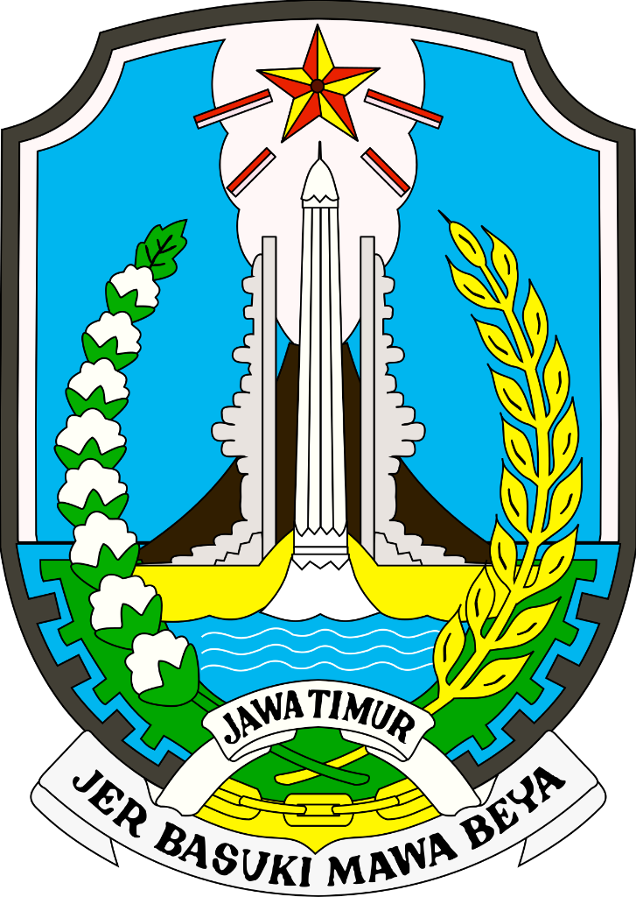
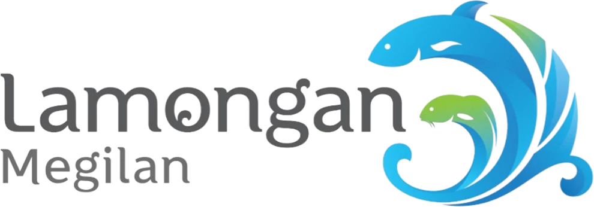
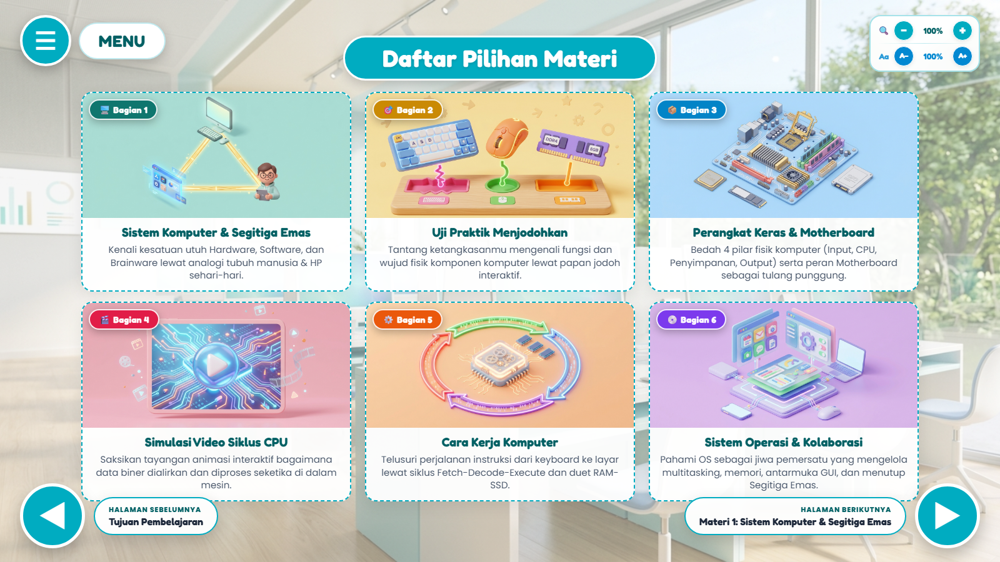
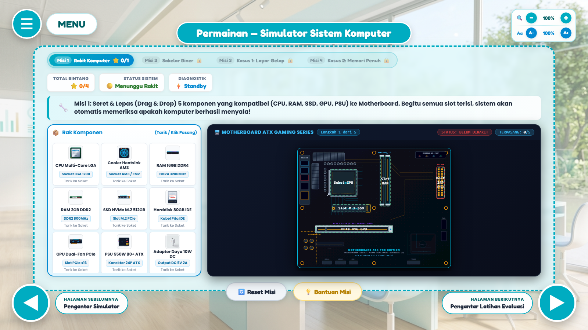
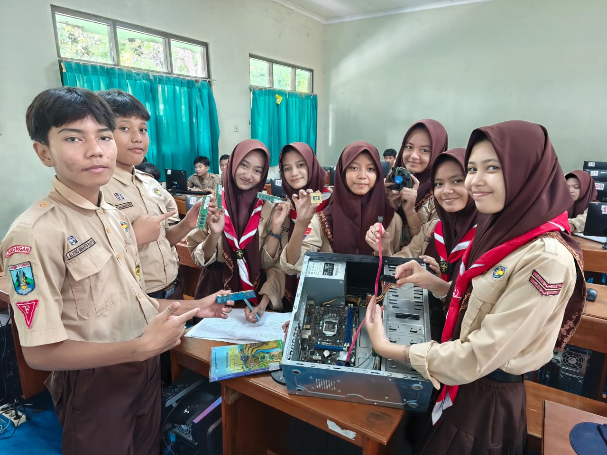
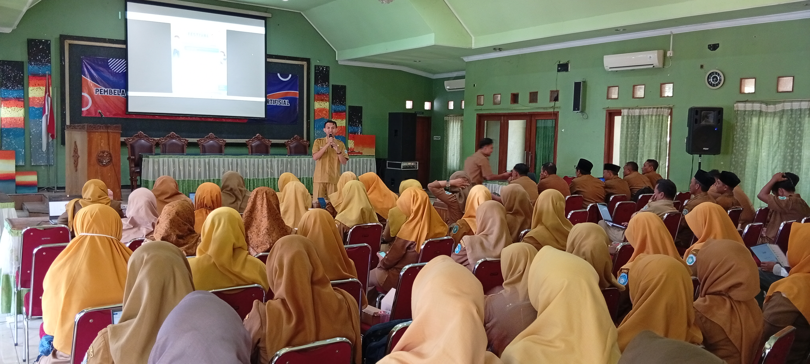

Dinas Pendidikan
Kabupaten Lamongan
★ Inovasi Pembelajaran
Apresiasi GTK Transformatif 2026
SISTEM KOMPUTER • INFORMATIKA FASE D
Menyelam ke Dalam
Mesin Digital
Inovasi Media Pembelajaran Interaktif & Laboratorium Maya Berbasis Web
Karya Inovasi dan Praktik Baik
21 Halaman Modular · Open Source
MPI Sistem Komputer: Menyelam ke Dalam Mesin Digital

Daftar Pilihan Materi

Simulator Rakit PC 4 Misi
▸Visualisasi Abstrak: Siklus kerja CPU & memori
▸Simulator Rakit PC Interaktif: Drag-and-drop & beep BIOS
▸Asesmen Formatif: Kuis 4 format pemantik nalar
🌐 Portal Lab
Tersedia 1 Lab Maya, 3 MPI, & 1 Game Edukasi gratis di:
fanani.my.id/lab
Pindai /lab
1 · Situasi & Tantangan
Murid Mahir Menatap Layar, Belum Paham Mesin di Baliknya

1 : 35
Alat Terbatas
Sarana Tidak Cukup
Hanya 1 PC peraga untuk 35 murid.
58,40
Nilai Awal 9A
Tuntas Hanya 37,1%
Baru 13 dari 35 murid capai KKTP.
Cemas
Ragu Mencoba
Takut Merusak Komponen
Khawatir korsleting & listrik statis.
Abstrak
Belajar Tekstual
Sekadar Hafal Istilah
Buku teks belum memvisualkan alur proses.
2 · Aksi: Inovasi Pembelajaran Mendalam
Dari Menghafal Istilah Menuju Pengalaman Nyata
1
Konsep Visual & Kontekstual
Analogi kontekstual sehari-hari & animasi siklus kerja CPU.
2
Simulator Perakitan PC Interaktif
Praktik mandiri di IFP & lab tanpa takut komponen rusak.
3
Asesmen Pemantik Nalar Kritis
Kuis interaktif multiformat dengan umpan balik reflektif seketika.
4
Guru Fasilitator & Etika AI
Membimbing inkuiri serta meneladankan kejujuran akademik AI.
3 · Dampak Nyata & Pengimbasan
Pemahaman Melonjak Tajam & Mengimbas Lebih Luas
Rata-Rata Nilai Sampel (Kelas 9A)
▲ +28,40 Poin
Awal
58,40
Akhir
86,80
Ketuntasan Belajar (KKTP ≥ 75)
▲ 13 → 32 Murid
Awal
37,1%
Akhir
91,4% (32 dari 35 Murid)
Kemandirian Tinggi
25 dari 35 murid antusias akses mandiri dari rumah.
Perubahan Sikap
Dari cemas menjadi antusias & berani mencoba.

★ Narasumber Dinas Pendidikan Kab. Lamongan
Sosialisasi Pembelajaran Mendalam & Koding/KKA (15 Sep 2026)

Ach. Chanifuddin Fanani, S.Pd.
Guru Informatika · SMP Negeri 2 Lamongan
🌐 https://fanani.my.id
✉ chanifuddin@gmail.com
GURU HEBAT, INDONESIA KUAT!
“Inovasi sejati diukur dari nalar kritis dan kemandirian belajar murid.”